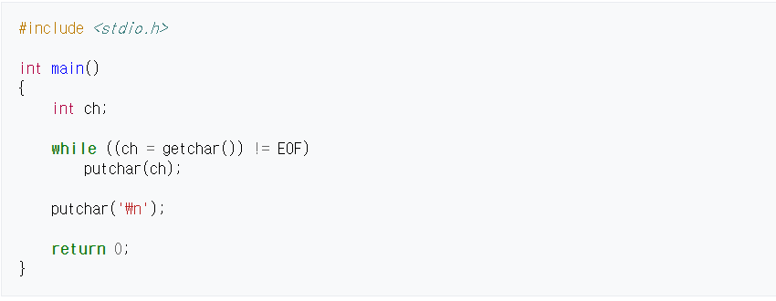

stdio.h은 Standard Input/Output library (표준입출력 라이브러리)의 약어로써,
C 언어의 표준 라이브러리 함수의 매크로 정의, 상수, 여러 형의 입출력 함수가 포함된 헤더 파일이다.
1970년대, 벨 연구소의 마크 레스크가 쓴 "portable I/O package"[1]로부터 내려저 왔다.
C++에서는 호환성을 이유로 stdio.h 헤더 파일이 포함되어 있는 것과 마찬가지로 cstdio도 std 이름공간에서 stdio.h의 함수와 형식이 선언되어 있다.
라이브러리 함수 (및 변종들)는 헤더 파일에 정의되어 있다. 그러므로, 프로그래머는 헤더 파일에 정의된 함수를 사용하기 위해 반드시 stdio.h 헤더 파일을 소스 코드에 포함해야 한다.
위의 프로그램은 바이트에 의해 바이트로 표준 입력으로 입력하고, 표준 출력으로 출력한다. 그리고 출력의 끝에 개행 문자를 추가한다.
stdio.h에 선언되어 있는 함수는 일반적으로 파일 조작 함수와 콘솔 입출력 함수 둘로 구분된다.
| 이름 | 해설 |
|---|---|
| 파일 조작 함수 | |
| 파일을 읽거나 쓴다. | |
| fclose | 파일을 닫는다. |
| remove | 파일을 삭제한다. |
| name | 파일 이름을 바꿉니다. |
| rewind | 파일 위치를 초기화한다. |
| tmpfile | 임시 파일을 만들고 연다.fclose()로 닫으면 임시 파일이 삭제된다. |
| 콘솔 입출력 함수 | |
| clearerr | end-of-file와 주어진 스트림에 대한 오류 지시자를 지운다. |
| feof | end-of-file 지시자가 주어진 스트림으로 설정되어 있는지 검사한다. |
| ferror | 오류 지시자가 주어진 스트림으로 설정되어 있는지 검사한다. |
| fflush | 보류 중인 버퍼된 출력을 주어진 스트림의 파일에 강제로 쓴다. |
| fgetpos | 첫 번째 변수 (FILE *) 부터 두 번째 변수 (fpos_t *)의 파일 위치 지시자를 저장한다. |
| fgetc | 파일로부터 한 개의 문자를 리턴한다. |
| fgets | 파일로부터 문자열을 읽는다. (파일의 끝이거나 개행 문자의 끝) |
| fputc | 한 문자를 파일에 입력한다. |
| fseek | 파일을 찾는다. |
| fsetpos | 기억된 첫 번째 인수(FILE *) 두 번째 인수(fpos_t *) 까지의 파일 위치 지시자를 설정한다. |
| fread | 파일로부터 데이터를 읽어들입니다. |
| fwrite | 파일로부터 데이터를 쓴다. |
| getc | 주어진 스트림으로부터 문자를 읽고 리턴한다. 강화된 파일 지시자로서, 주어진 스트림을 한 번 이상으로 평가하는 fgetc와 같은 효과를 내는
매크로이다.
|
| getchar | getc와 같은 효과를 냅니다. |
| gets | stdin이 개행문자를 발생시키고 인수에 저장할 때까지 문자를 읽는다. |
| printf, vprintf | 표준 출력 스트림에 출력한다. |
| fprintf, vfprintf | 파일로 출력한다. |
| sprintf, snprintf,vsprintf, vsnprintf | 문자 배열로 출력한다. |
| perror | stderr에 오류 메시지를 쓴다. |
| putc | 스트림에 문자를 쓴다. |
| putchar, fputchar | putc(stdout)와 같은 효과를 낸다. |
| scanf, vscanf | 표준 입력 스트림으로 입력한다. |
| fscanf, vfscanf | 파일로 입력한다. |
| sscanf, vsscanf | 문자 배열로부터 입력한다. |
| setbuf, setvbuf | 주어진 스트림에 버퍼링 모드로 전환한다. |
| tmpnam | 임시 파일을 만듭니다. |
| class="tsecond"ungetc | 문자를 스트림의 역순으로 읽는다 |
| puts | stdout에 문자, 문자열을 출력한다. |
| 이름 | 해설 |
|---|---|
| EOF | end-of-file 절을 가리키는 용도로 사용되는 int형의 음의 정수. |
| BUFSIZ | setbuf() 함수에 의해 버퍼 크기를 나타내는 정수. |
| FILENAME_MAX | 충분히 열 수 있는 저장 가능한 파일 이름의 char형의 배열 크기. |
| FOPEN_MAX | 동시에 열 수 있는 파일의 개수; 최소 8 |
| _IOFBF | "input/output fully buffered"의 약어. 이 정수값은 setvbuf() 함수에 넘겨서 버퍼화된 블록의 스트림을 열기 위해 입출력에 요구한다. |
| _IOLBF | "input/output line buffered"의 약어. 이 정수값은 >setvbuf() 함수에 넘겨서 버퍼화된 라인의 스트림을 열기 위해 입출력에 요구한다. |
| _IONBF | "input/output not buffered"의 약어. 이 정수값은 setvbuf() 함수에 넘겨서 버퍼화 되지 않은 것을 스트림을 열기 위해 입출력에 요구한다. |
| L_tmpnam | char 배열이 tmpnam() 함수를 발생시킬 정도의 충분한 크기 |
| NULL | 널 포인터의 약어인 매크로 상수. 이 상수는 메모리의 어떤 유효한 위치의 개체도 가리키지 않는 포인터 값이다. |
| SEEK_CUR | fseek() 함수의 요구한 현재 파일 위치의 상대 위치를 나타내는 정수. |
| SEEK_END | fseek() 함수의 요구한 end of file의 상대 위치를 나타내는 정수. |
| SEEK_SET | fseek() 함수의 요구한 파일의 시작점의 상대 위치를 나타내는 정수. |
| TMP_MAX | tmpnam() | 함수가 생성가능한 최대 파일명 길이 (최소 25자)
| 이름 | 해설 |
|---|---|
| stdin | 표준 입력 스트림(일반적으로 키보드)를 참조하는 FILE에 대한 포인터. |
| stdout | 표준 출력 스트림(일반적으로 디스플레이 터미널)을 참조하는 FILE에 대한 포인터. |
| stderr | 표준 오류 스트림(항상 디스플레이 터미널)을 참조하는 FILE에 대한 포인터. |